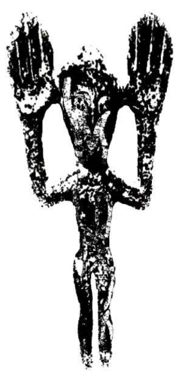

Som veľmi "out-of-box" mysliaci človek:

Pochádzam z Banskej Bystrice a na FEI STU v Bratislave študujem aplikovanú informatiku. Moje koníčky sú tvorba počítačových hier, kreslenie, hudba a fitness – vo Workspace si môžete po častiach prezrieť jednu moju kresbu. Budem rád aspoň za jeden bod za kreativitu… bohužiaľ, podcenil som konkrétnosť zadania.